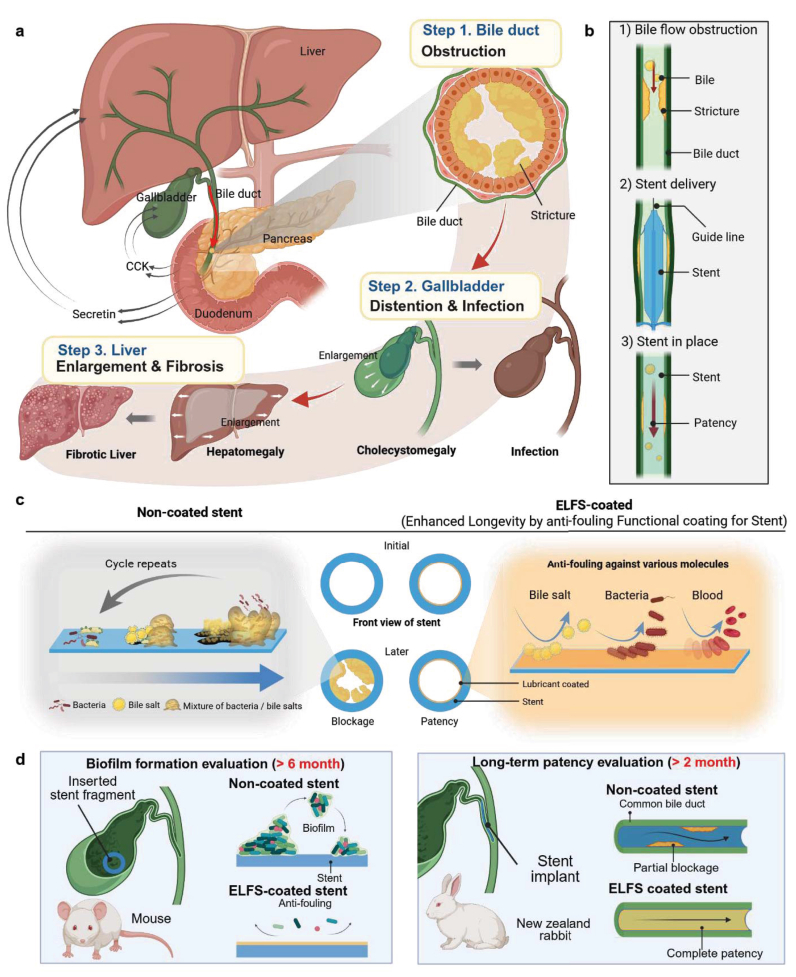

연구 개요
연세대학교 BLISS Lab(서정목 교수 연구실)이 공동연구진과 함께 수행한 이 연구는 단일 폴리비닐알코올–알지네이트 하이드로젤(PAH)에 처리하는 이온의 종류와 순서를 바꿔 기공 구조와 강성을 조절했습니다. 기공 크기는 65 nm에서 2.5 µm, 탄성률은 약 50–140 kPa 범위에서 달라졌으며, 이에 따라 포도당 바이오센서의 선형 범위를 땀용 0.1–1 mM에서 간질액용 2–30 mM까지 설정했습니다.
연구 배경
웨어러블·이식형 전기화학 센서의 하이드로젤 층은 조직과의 기계적 불일치를 줄이고 분석물이 전극에 도달하는 경로를 조절합니다. 화학 가교나 희생 주형을 이용하는 기존 제조법에서는 망상 구조를 조밀하게 하면 강도는 높아지지만 확산이 느려지고, 기공을 늘리면 확산은 빨라지지만 층이 약해집니다. 땀 센서는 변형 조건에서 저농도 분석물의 빠른 이동이 필요하고, 이식형 센서는 고농도에서 포화되지 않도록 이동을 제한하면서 삽입 강도와 오염 저항성도 갖추어야 합니다.
설계와 접근
동결–해동으로 만든 PAH를 Na₂SO₄, CaCl₂ 또는 두 용액에 순차적으로 담갔습니다. 코스모트로픽 음이온인 황산염은 PVA 사슬을 염석시켜 상분리를 유도하고, 연결된 계층적 기공망을 남기면서 PVA 결정화를 촉진합니다. 칼슘은 알지네이트와 에그박스 가교를 형성합니다. 칼슘을 먼저, 황산염을 나중에 처리하면 칼슘–알지네이트 결합점이 핵생성 자리로 작용해 망상 내부에 CaSO₄ 결정이 균일하게 자라 조밀한 구조가 되고, 반대 순서에서는 기공이 먼저 형성되고 CaSO₄는 주로 표면에 생깁니다. 이렇게 얻은 하이드로젤(ISC–PAH)을 포도당 산화효소와 니켈 도핑 프러시안 블루·PEDOT:PSS 기반 전도성 촉매 하이드로젤 위에 외곽 확산 제어층으로 적용해, 포도당 유속과 겉보기 미카엘리스–멘텐 상수를 조절했습니다.

이온 처리 순서에 따른 하이드로겔 구조 설계와 기계적 성질·분석물 확산을 연결하는 바이오센서 개요입니다.
Dongwook Lee, Soo A Kim, Beom‐Jun Shim 외. “Ion‑Mediated Structural Engineering of Hydrogel Interfaces for Tunable Mechanical and Analyte Diffusion Properties in Electrochemical Biosensors”. Figure 1. DOI: 10.1002/adma.202515767. CC BY 4.0. 그림 내용은 변경하지 않았습니다.
평가 방법
네 가지 변형(Na₂SO₄–PAH, CaCl₂–PAH, Na₂SO₄/CaCl₂–PAH, CaCl₂/Na₂SO₄–PAH)과 미처리 PAH를 SEM, 기공 측정, FT-IR, XPS, XRD, 라만 분광, 접촉각, 4·20·40 kDa FITC–덱스트란 FRAP, 금 미세전극 정상상태 전류로 분석했습니다. 이어 인장·압축·반복 압축·유변·팽윤(인공 땀, 인공 간질액) 시험과 NIH-3T3 세포 생존율을 평가했습니다. 포도당 감지는 스크린 인쇄 탄소 전극에서 비교한 뒤, 신축성 패치를 건강한 참가자 4명의 자전거 운동·당음료 섭취 조건에서, 백금선 이식형 프로브를 BSA 용액 속 팬텀 피부 반복 삽입과 포도당·인슐린을 주사한 마취 생쥐 4마리에서 시험했습니다.
연구 내용과 주요 결과
평균 기공 크기는 미처리 PAH 1.08 µm, Na₂SO₄ 처리 약 2.50 µm, CaCl₂ 처리 1.85 µm, Na₂SO₄ 후 CaCl₂ 처리 약 2.23 µm였고, CaCl₂ 후 Na₂SO₄ 처리는 막대형 CaSO₄ 결정을 포함한 65 nm 기공의 조밀한 구조를 만들었습니다. 4 kDa FITC–덱스트란 FRAP에서 상대 확산도는 Na₂SO₄–PAH 약 7.1 ± 1.4%, CaCl₂/Na₂SO₄–PAH 1.26% ± 0.09%였으며, 40 kDa 덱스트란에 확산 장벽을 보이지 않은 것은 Na₂SO₄–PAH뿐이었습니다. 미세전극 전류로 구한 확산계수도 기공 크기와 같은 순서를 보였습니다.
이온 처리한 모든 변형이 미처리 PAH보다 기계적으로 강했습니다. Na₂SO₄–PAH는 인장 강도 약 237 kPa, 연신율 약 347%에 도달했고, 이 시편과 두 순차 처리 시편의 탄성률은 134–143 kPa로 미처리 PAH(54 ± 6 kPa)보다 높았습니다. 90% 변형에서의 압축 강도는 Na₂SO₄–PAH, CaCl₂/Na₂SO₄–PAH, Na₂SO₄/CaCl₂–PAH가 각각 약 5.17, 3.32, 3.21 MPa로 미처리 PAH(1 MPa 미만)보다 컸습니다. 두 순차 처리 하이드로젤은 37 °C 인공 간질액에서 48시간 동안 3% 미만으로 팽윤했고, 모든 변형에서 섬유아세포 생존율이 90%를 넘었습니다.
효소층과 촉매층을 동일하게 한 전극에서 다공성 Na₂SO₄–PAH 층은 가장 높은 감도(1.813 µA mM⁻¹), 15.4 µM의 검출 한계, 0.1–1 mM의 선형 범위를 보였고, 조밀한 CaCl₂/Na₂SO₄–PAH 층은 0.077 µA mM⁻¹의 감도로 선형 범위를 2–30 mM까지 넓혔습니다. 겉보기 미카엘리스–멘텐 상수도 1.49 mM에서 18.7 mM로 증가했습니다. Na₂SO₄–PAH를 적용한 신축성 패치는 10% 변형 50회 반복에서 안정적이었고, 건강한 참가자 4명에서 땀 포도당이 혈당을 9–12분 지연으로 따라갔으며, 짝지은 54개 값이 모두 Parkes 오차 격자 A 영역에 들었습니다.
CaCl₂/Na₂SO₄–PAH를 적용한 이식형 프로브는 2–30 mM에서 선형(R² = 0.997)이었고, BSA 용액 속 팬텀 피부를 세 번 관통한 뒤에도 응답을 유지한 반면 코팅이 없거나 미처리 PAH를 쓴 프로브는 신호를 잃었습니다. 0–20 mM 포도당 반복 변화에서 변동계수는 3% 미만이었습니다. 생쥐 4마리에서 간질액 포도당은 혈당을 9–14분 지연으로 따라갔고 간질액/혈액 비는 0.9531이었으며, 짝지은 74개 값 중 98.6%가 A 영역에 들었습니다.
남은 과제
형광 영상에서 CaCl₂/Na₂SO₄–PAH 표면은 단백질 함유 배지에서 7일이 지나면 일부 단백질을 흡착하기 시작했으나, 확산도와 신호는 14일간 유지되었습니다. 저자들은 이온 순서에 따른 구조 변화를 현장(in situ) 분석으로 규명하고, 생리 조건과 생체 내에서 장기 안정성을 추가로 평가할 계획이라고 밝혔습니다.
함께 읽을 연구
Fully integrated wearable sensor arrays for multiplexed in situ perspiration analysis
관련 기기는 다중 땀 분석, 온도 보정, 회로를 결합합니다. 이 연구는 하이드로겔 계면의 물질 전달과 역학 특성을 조절합니다.
초록을 참고한 소개RESEARCH NEWS
연구 소식
미확인 후보와 접근 제한 (1)
해설에 사용한 자료
이 해설은 오픈 액세스 논문의 본문과 그림 설명(PMC13040517)을 바탕으로 하며, 본문에서 인용한 보충 그림과 표가 담긴 보충자료는 검토하지 않았습니다.